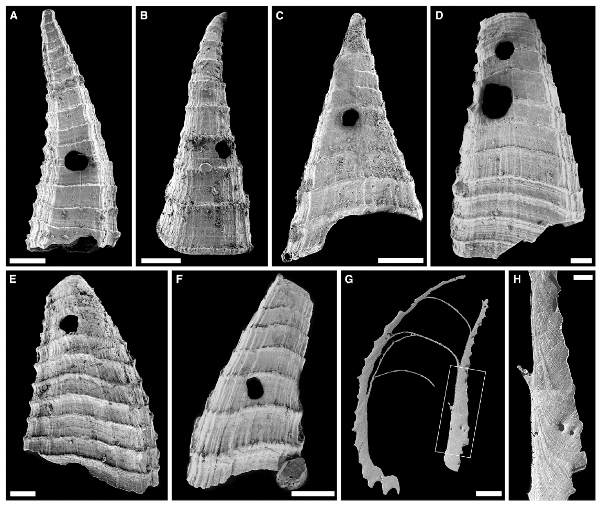
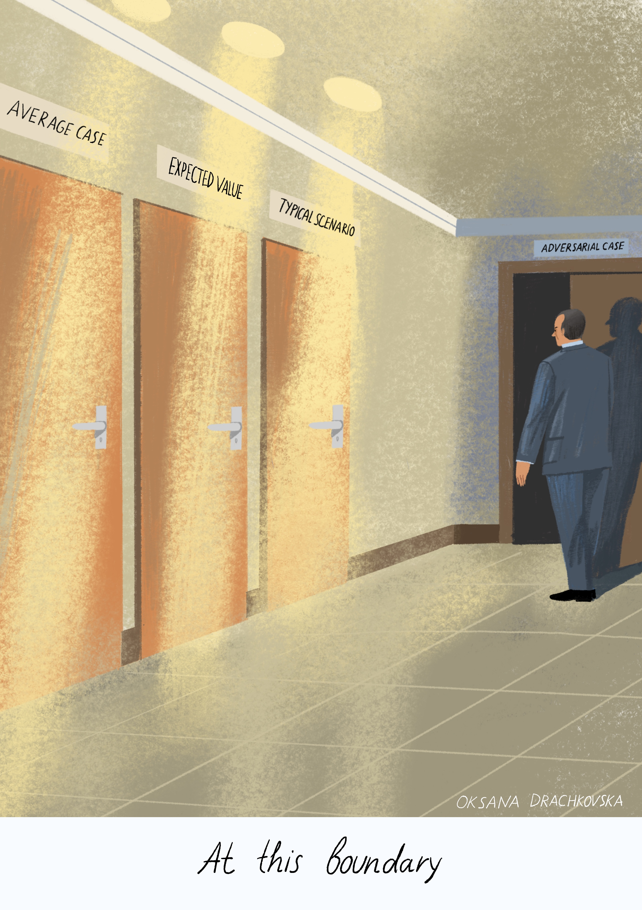
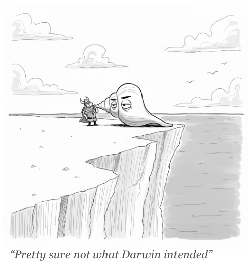

Beyond the Red Queen
Why crabs and clams reached a stalemate but spam and filters never did
Spam vs. filters is routinely compared to biological arms races. The comparison is flattering to the defender. It is also wrong.
The Oldest Arms Race
Five hundred and seventeen million years ago, a small creature crawled along the floor of a shallow sea in what is now South Australia. Nobody knows exactly what it looked like. The best guess is a worm, a few millimeters long, soft-bodied, wearing a coat of tiny mineralized plates. Each plate was a ridged, hollow cone no bigger than a grain of sand.¹
The animal is called Lapworthella fasciculata. It was one of millions of species trying out armor during the Cambrian explosion. We will never see one alive. What we have are the plates, dissolved out of ancient limestone with weak acid, sorted by rock layer. Thousands of them.
Many have holes. Neat, circular perforations, the work of something, probably a soft-bodied worm or primitive mollusk, that could drill through a phosphatic shell and consume the animal inside.
A recent study measured shell thickness and drilling frequency across fourteen meters of layers of rock, each meter a later moment in time.² The shells got thicker. The percentage with holes went up, from one percent at the bottom to nearly four at the top. The prey was reinforcing its armor and the predator was keeping pace.
In 1973, Leigh Van Valen named this dynamic the Red Queen effect, after a line in Lewis Carroll's Through the Looking-Glass: "It takes all the running you can do, to keep in the same place." The drilled shells of Lapworthella appear to be the oldest evidence of this dynamic caught in the act. A microevolutionary arms race, frozen in rock.³
The wars between spam and spam filters are routinely described as a Red Queen dynamic. Attackers evolve; defenders adapt; attackers shift. Both sides run. Neither wins. But the biological and spam arms races are different in ways that have profound implications.

Damping Conditions
Across every well-documented biological arms race, escalation happens, then plateaus. Crabs evolved stronger claws; mollusks evolved thicker shells. T. rex grew larger and more powerful; ceratopsians evolved heavier armor. But T. rex did not become Godzilla. Clams did not become tanks. The arms race continued within an envelope. Traits fluctuated, fine-tuned, occasionally shifted, never exploded.
The reason is physics. Every improvement in attack or defense costs calories. A crab with a stronger claw needs more muscle, which requires more food. A clam with a thicker shell expends more calcium carbonate and more energy carrying the weight. Because energy is finite, escalation competes directly with reproduction, mobility, and survival. When the marginal cost of a stronger weapon exceeds the marginal benefit of wielding it, further escalation stops being selected for.
Second, evolution does not design from scratch. It modifies what already exists, one generation at a time. A crab's claw can get stronger, but it cannot become a drill. This is path dependence: the space of possible adaptations is constrained by history, and explored slowly. Each improvement forecloses certain futures and opens others. Defenders are never confronted with infinite novelty, because attackers are prisoners of their own anatomy.
Finally, failure is expensive on both sides. The prey that loses dies. But predators that miss repeatedly also die. They starve. (Prey-predator pressure is not perfectly symmetric⁵, but over enough encounters the difference shrinks.) Evolution punishes gamblers on both sides. A predator cannot afford to try a hundred speculative attacks in the hope that one works, because the ninety-nine failures cost energy it cannot recover.
When these constraints operate together, escalation damps itself. The arms race does not disappear. Both sides keep adapting, but neither can break away.
The contest in your inbox lacks all three.
No Cost for Failure
In the early 1990s, spammers discovered the open relay.⁶ Misconfigured mail servers would forward anything for anyone, no questions asked, no authentication required. It was as if every post office in the world agreed to deliver any sack of letters, free of charge. A single operator with a list and a script could reach millions of inboxes without owning a single server.
The relays were eventually closed. It made no difference. Spammers built their own infrastructure, or rather, stole it. By the mid-2000s, botnets had conscripted millions of ordinary home computers into zombie armies. The Storm botnet alone may have controlled fifty million machines.⁷ Because the compute was stolen rather than purchased, the marginal cost of each additional message was not just low. It was zero.
In November 2008, researchers convinced two upstream providers to disconnect McColo, a hosting company in San Jose that served as the backbone for several major botnets. Global spam dropped 70% overnight.⁸ Within weeks, it was back. The botnets decentralized and rebuilt.
Each of these steps did the same thing. It pushed the cost of a failed attempt closer to nothing. This is the first place where the biological analogy breaks. In evolution, every escalation costs the organism; escalation that doesn't pay for itself gets selected out. A spammer can send a hundred emails or ten thousand and it will cost him the same.¹²
Dimension Shifts
A crab's claw can get stronger, but it cannot become a drill.
Before 2002, spam filters were static: keyword blacklists, header checks, rule sets. Attackers changed the words; defenders updated the lists. Both sides iterated within the same dimension. Then Paul Graham published "A Plan for Spam."⁹ His Bayesian filter learned the statistical signature of junk instead of matching keywords. It worked. The attackers stopped trying to beat it and left for a dimension it couldn't see.
Spammers responded by rendering their payload as a JPEG. Graham's filter, which read words, saw nothing. When filters learned to read images, attackers moved to botnets. When botnets were shut down, they moved to disposable accounts and snowshoe distribution.¹¹ Each time, the abandoned tactic stayed defeated. The attacker simply left for a dimension the defense had never considered.
In biology, the space of possible adaptations is constrained by history and explored slowly. In email, the attacker can jump to any dimension at any time. Blocking one tactic does not narrow the attacker's future options. The space is open-ended and recombinable. In evolution, closing one path constrains the organism. Here, it merely redirects. Defensive success in one dimension buys nothing in the next.¹³
The Gambler's Advantage
Finally, there is the question of risk.
Biology punishes gambling on both sides. In spam filtering, the risk is radically lopsided. A spammer who sends ten thousand messages and reaches one inbox has succeeded. The other 9,999 failures cost nothing. But a filter that blocks one legitimate email has created a visible, personal problem. A missed invoice, or a job offer that never arrived. A password reset that vanished. The user does not blame the spammer, but the filter.
Email providers know this. In 2013, Gmail introduced tabbed inboxes: Primary, Promotions, Social, Updates. Google had the machine learning capability to filter far more aggressively. They chose to sort instead. The decision revealed the asymmetry in pure form: it was safer to let a questionable message land in Promotions than to risk blocking a real one from Primary. Sorting is what you do when the cost of a false positive is worse than the cost of noise.
This gives the attacker a structural advantage that no biological predator has ever enjoyed. A spammer can try any strategy, no matter how unlikely to succeed, because failure is invisible and free. A filter cannot respond aggressively, because its mistakes are visible and expensive. The attacker can gamble without limit. The defender must play it safe.
The Sawtooth
Biological arms races with damping conditions produce something like the chart on the left. Shell thickness against drilling force. Speed against speed. Camouflage against visual acuity. The specifics vary across species and time scales, but the shape is always roughly the same: gradual, bounded escalation. Neither side breaks away.
The contest between spam and filters has produced something like the chart on the right. Bayesian filters mastered text; spammers jumped to images. Filters learned to read images; spammers abandoned the tactic entirely and moved to botnets. Each defensive victory worked. None of them accumulated. The attacker never tried to beat a defeated strategy. They searched for the next undefended dimension and moved there. This is what an adversarial search contest looks like.
The Von Neumann Shift
A lioness on the Serengeti succeeds in roughly one chase out of ten. That number is not the result of a special attack or a targeted strategy, but a statistical outcome. She does roughly the same thing every time, and the variables that determine success or failure are essentially random: wind direction, terrain, the gazelle's fatigue. She runs the same play against a stochastic environment.
A spammer who gets through 1% of filters is doing something fundamentally different. The 1% is not where the spammer gets lucky but where she found the crack. The attacker who pays no cost for failure will send enough volume to find it every time. The attacker who can shift across dimensions will probe it from angles the filter was never trained on. And the defender who cannot afford false positives cannot close it aggressively.
These are not two versions of the same contest. The lioness can be described by probability. The spammer requires something different.
Zero-sum adversarial contests are well studied in game theory. In a zero-sum game, exploiting your weakness is always the opponent's best move. The minimax theorem formalizes this: the rational strategy is to minimize your maximum possible loss.¹⁴ Assume your opponent will find the move that hurts you most, and plan for that.
The minimax theorem was formulated for games of deception and hidden information. It fits the inbox with uncomfortable precision. In a zero-sum adversarial contest, your opponent will find the worst case of any strategy you deploy, because finding it is always their best move. Each defense has a worst case. The attacker finds it. The defender patches and rebuilds. The attacker finds the next one.
Unless the underlying conditions change, or the game is abandoned entirely, we have every reason to expect history continuously repeating itself.

A New Creature Prowls the Serengeti
She never tires. She does not cross the grass; she materializes behind the herd. When she misses, she does not retreat in fatigue; she rewinds and launches again from a different angle. She runs a hundred hunts simultaneously. The gazelle that escapes one is already inside another.
And she does not look like a lioness. She is indistinguishable from the gazelle.
It is approaching fast.
- Biology has brakes that spam lacks. Every biological arms race plateaus because escalation costs calories, anatomy constrains innovation, and failure kills. Spam escalates for free, shifts dimensions at will, and pays nothing for failure.
- Defensive wins don't accumulate. Bayesian filters mastered text, so spammers jumped to images. Filters learned images, so spammers moved to botnets. Each victory held its ground and bought nothing for the next front.
- This is not a Red Queen race. It's an adversarial game. The lioness succeeds by probability. The spammer succeeds by finding the crack. The right framework is not Van Valen, but Von Neumann.
- History will repeat until conditions change. Or until the game is abandoned entirely.
APPENDIX
| Era | Attack | Defense | Result |
|---|---|---|---|
| Early 1990s | Open relay exploitationMisconfigured servers forward anything for anyone, free of charge. | Keyword filtersFilters scan for banned words and phrases (e.g. SpamAssassin). | First content-based defense. Easily circumvented by rewording. |
| Late 1990s | Open relay exploitation (cont.) | Relay closureServers close open relays. Sendmail 8.9 reconfigured (1998). | Permanent infrastructure fix. Relays shut for good. Attackers build their own infrastructure. |
| ~2002 | Keyword-evading spamMisspellings, character substitution ("V1agra"), formatting tricks. | Bayesian filterPaul Graham's probabilistic classification learns statistical patterns, not specific words. | Genuine leap. First adaptive defense. Keyword evasion rendered obsolete. |
| ~2003 | Word saladStolen text from novels and news padded into messages to poison statistical models. | Improved statistical modelsBetter tokenization and n-gram analysis defeat text padding. | Attackers can no longer win inside text. They abandon the dimension entirely. |
| ~2004 | Image-only spamAd rendered as JPEG, invisible to text-based filters. | Image hashing, OCRFilters learn to read images. | Dimension shift. Attackers need infrastructure to scale. |
| Mid 2000s | BotnetsMillions of compromised home PCs (Storm: ~50M machines). | IP blacklistsSpamhaus, DNSBL block known bad IPs. | Identity-based: blocking by address, not content. Effective until IPs rotate. |
| 2008 | Botnets (cont.) | McColo takedownUpstream providers sever botnet backbone. Spam drops 70% overnight. | Physical enforcement. Decisive but non-repeatable. Botnets decentralize and rebuild. |
| ~2009 | Decentralized botnetsFast-flux networks rebuild within weeks. Volume returns to pre-McColo levels. | No structural countermeasure | Attackers seek legitimate cover. Infrastructure alone won't stop them. |
| Late 2000s | Disposable webmail accountsFree accounts created at scale to send from trusted providers. | CAPTCHAs, risk-based authenticationPuzzles and behavioral checks block automated signup. | CAPTCHA farms bypassed the puzzles using outsourced labor, but the economics didn't scale. Attackers abandoned the approach. |
| ~2010 | Snowshoe spamLow volume spread across thousands of IPs and domains to stay below thresholds. | Reputation systemsSender scoring based on domain age, volume patterns, engagement. | First retreat to identity. Reputation works, but sender identity remains forgeable. |
| ~2012 | Domain spoofingForging sender identity to bypass reputation systems. | DMARC, DKIM, SPFAuthentication standards verify domain ownership. | Spoofing closed. Attackers don't forge identities; they manufacture compliant ones. |
| ~2013 | Graymail explosion, spam camouflaged as graymailLegitimate bulk email floods the inbox. Spam hides inside it, indistinguishable from real promotions. | Gmail tabs, Focused inboxSpatial sorting: Primary, Promotions, Social, Updates. | Sorting, not filtering. Google couldn't reliably tell them apart, so they separated the entire category. |
| Mid 2010s | Email warming, sequencing, domain rotationFake reputation built on properly authenticated domains. | ML filtersBillions of signals: sender reputation, behavioral patterns, engagement data. | 99.9% catch rate claimed. But camouflage is now indistinguishable from legitimacy. |
| ~2021 | Manufactured identity on authenticated domainsWarming pools, aged domains, clean sending history — all compliant. | BIMI / VMCVerified Mark Certificates require trademark and financial stake to display brand logo. | Hardest identity gate yet. But excludes anyone without a trademark. |
| Present | LLM-generated outreachInfinite linguistic variation, indistinguishable from human writing. | AI-powered filtersScanning for statistical signatures of automation. | AI vs. AI. One last open graph bet. Both sides at machine speed. |
The Dimension Shift. Defensive victories in one dimension (e.g., Bayesian text filtering in 2002) do not accumulate; they merely force the attacker to abandon the dimension entirely and move to another, such as image-only spam (2004) or infrastructure-heavy botnets (2008).
Infrastructure vs. Logic. Physical enforcement — like the 1998 relay closures or the 2008 McColo takedown — produces massive, overnight drops in volume (70%), but these wins are non-repeatable as attackers decentralize and rebuild more resilient systems like fast-flux networks.
The 2013 Tactical Surrender. The introduction of Gmail Tabs marked the point where Google couldn't reliably tell them apart, shifting the strategy from filtering (deleting the bad) to spatial sorting (hiding the noisy), effectively admitting that spam and legitimate bulk email had become functionally identical.
Escalating Proof of Stake. As sender identity became forgeable (2010) and then manufactured (2021), defenders moved from simple technical checks (SPF/DKIM) to high-barrier identity gates like BIMI, which require a registered trademark and a financial stake just to display a brand logo.
The Closing Canyon. The present era of LLM-generated outreach represents a return to the open graph, but with infinite linguistic variation that collapses the statistical gap between junk and legitimacy, forcing a high-speed AI vs. AI simulation of human intent.

¹ Lapworthella belonged to the tommotiids, an extinct group of early Cambrian invertebrates on the stem lineage leading to brachiopods. Articulated fossils of the related camenellan Wufengella, from the Chengjiang Biota of China, show a free-living, dorsally armored, worm-like animal. See Guo et al., Current Biology 32 (2022).
² Bicknell, R.D.C., Campione, N.E., Brock, G.A., and Paterson, J.R., "Adaptive responses in Cambrian predator and prey highlight the arms race during the rise of animals," Current Biology 35 (2025), 882–888.
³ At ca. 517 million years old, this is the earliest known microevolutionary arms race in the fossil record. Older drilling predation exists, notably in the Ediacaran Cloudina, but no Precambrian record shows adaptive response in both predator and prey.
⁴ Lapworthella fasciculata sclerites under scanning electron microscope, from the Second Plain Creek Member of the Mernmena Formation, Flinders Ranges, South Australia. Sclerites showing circular to subcircular holes made by a perforating predator. Scale bars represent 200 μm. From Bicknell et al., Current Biology 35 (2025).
⁵ The asymmetry is known as the "life-dinner principle," coined by Dawkins and Krebs (1979): the rabbit runs for its life, the fox runs for its dinner. The prey's stakes are higher per encounter, which should favor stronger selection on the defensive side. In practice, predators face cumulative pressure across many encounters, which narrows the gap.
⁶ The vulnerability was not a flaw in implementation but a feature of design. Sendmail, the dominant mail transfer agent through the 1990s, shipped with open relaying enabled by default. Any machine on the internet could connect and ask it to forward mail to any other address. This made sense on the ARPANET, where every node was a known colleague. On the open internet, it was an unlocked door with a sign that read "please come in."
⁷ Estimates of Storm's size ranged from one million to fifty million compromised machines, depending on the methodology and the moment of measurement. The botnet was designed to resist census: it used peer-to-peer communication rather than a central server, making it difficult to count nodes from the outside. The fifty million figure, widely cited in press coverage, likely represents a cumulative total of machines infected over the botnet's lifetime rather than a simultaneous headcount.
⁸ On November 11, 2008, Global Crossing and Hurricane Electric severed McColo's connections after security researchers presented evidence that the hosting provider served as the command-and-control backbone for several major botnets, including Srizbi, Rustock, and Mega-D. The 70% figure was reported by multiple monitoring services, including MessageLabs and IronPort. For a full account, see "Mowing the Lawn" in this series.
⁹ Graham's essay "A Plan for Spam" (August 2002) did not invent Bayesian classification, but it was the first to demonstrate its effectiveness against spam in a way that practitioners could implement. Within months, open-source spam filters based on his approach were in widespread use. The essay arguably did more to shape the modern spam filter than any single piece of academic research.
¹⁰ Services like DeCaptcher and AntiCaptcha charged $1–3 per thousand CAPTCHAs solved. Workers, mostly in Bangladesh, Vietnam, and Indonesia, earned fractions of a cent per puzzle. Some operations disguised the work as free game access: users believed they were playing a puzzle game while unknowingly solving CAPTCHAs for spammers.
¹¹ A snowshoe spreads the wearer's weight so they don't break through the snow. Snowshoe spammers spread volume across thousands of IPs and domains so no single sender broke through the detection threshold.
¹² When the cost of sending is not borne by the sender, volume is constrained only by the recipient's attention. This is the classic structure of a negative externality: the price signal that would otherwise limit output is absent. For a detailed estimate of the costs imposed on recipients, see "The Cost of Cold Email" in this series.
¹³ Security researchers call this the defender's dilemma: the attacker needs to find one path in; the defender must close them all. When the space of possible attacks is not fixed but open-ended, the advantage compounds. Each defensive victory addresses one tactic. Each new tactic opens an unexplored front. See Schneier, "The Defender's Dilemma" in Liars and Outliers (2012).
¹⁴ Von Neumann's minimax theorem (1928) proves that in a finite two-player zero-sum game, there exists an optimal strategy for each player that minimizes their maximum possible loss. The key insight is that this strategy does not depend on predicting the opponent's behavior. It assumes the opponent will play optimally against you. Strictly, the theorem applies to games with fixed strategy sets. The email case extends the logic to an open-ended space, where the attacker can redefine the game after each round, which is why the defender's optimal response in one round carries no value into the next. The original paper is "Zur Theorie der Gesellschaftsspiele," Mathematische Annalen 100 (1928). The full framework was developed in Von Neumann and Morgenstern, Theory of Games and Economic Behavior (1944).